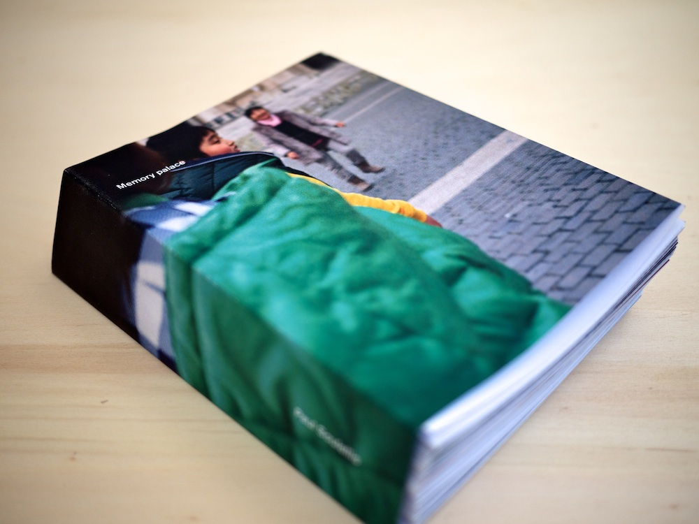
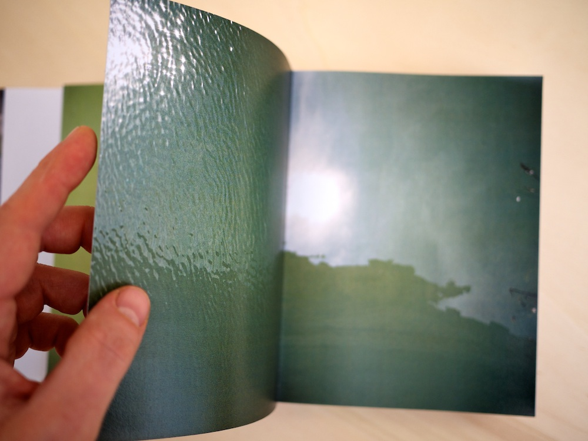
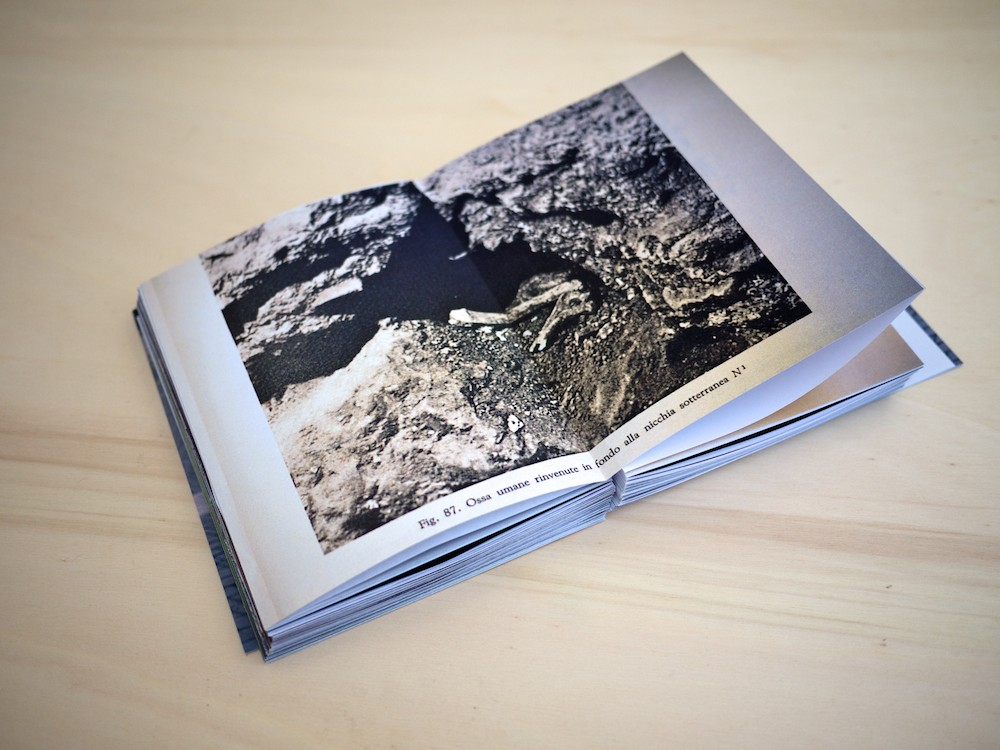
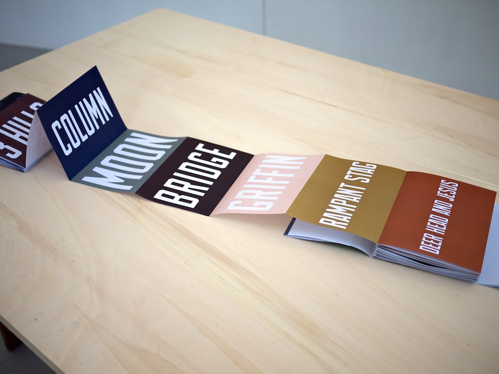
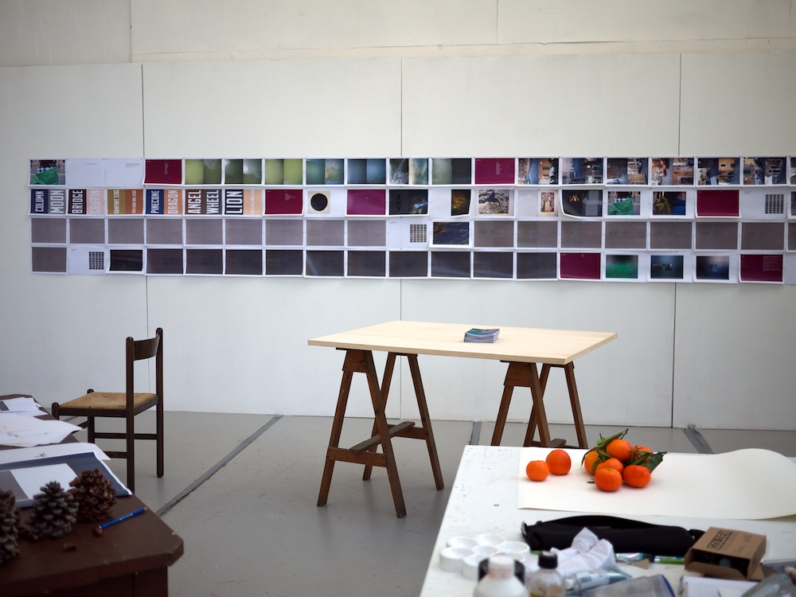

Memory Palace (2011)

What remains when something is forgotten? The burial of a saint, the planning of a city, the moment captured within a photograph—each leaves traces. Bones, language, pixels. Untouchable relics. Structural artifacts that can be recombined and reused to conjure new meaning. In the tracing of a memory we change it and we’re released from the original image—we inscribe our own story.

Produced during a visiting artist residency at the American Academy in Rome in January and February 2011, Memory Palace is a book object that documents three desire lines—structural guides that resonate and conjure meaning. They demonstrate three ways to explore Rome:
☓ The rioni neighborhood lines of 1744 (boundaries)
☓ The 13 bridges crossing the Tevere river, a geographical line (a cut)
☓ The scavi or excavations below Rome, i.e., the story of Saint Peter’s bones (place-based narratives)
Each desire line presents a tension, the crazy friction when time, geography and story rub up against each other.

But the book is also a container for history (my past, Rome’s)—a non-space to store objects, associations, and meaning. An imaginary structure to contain the artifacts: desire lines, relics and maps. It’s like a reliquary, housing both the remains of lost memory (clues to past experiences) as well as new material.

As a photographic investigation, Memory Palace asks if the image can evoke real meaning, or if this is an impossible task. Like a relic—a holy fragment that stands for the whole (and retains all of its power)—can a single pixel open up new dimensions for exploring the image? What kind of faith is required to investigate the photograph?


Download PDF